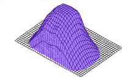
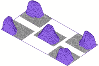
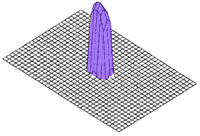

Da bi osigurao dobru ekspoziciju i za nju odabrao odgovarajući otvor blende i trajanje ekspozicije fotoaparat mora imati sustav za mjerenje svjetla. U principu se takvi sustavi dijele na dva različita načina mjerenja ovisno o tome mjere li svjetlost koja dolazi do fotoaparata, ili izravno mjere svjetlost koja osvjetljava senzor. Prije ere digitalnih fotoaparata u jeftinim fotoaparatima se koristio onaj prvi princip. Kraj same leće takvih fotoaparata nalazio se je senzor koji je procjenjivao svjetlost koja do njega dolazi i tako određivao postavke blende/zatvarača. Taj princip je kao glavnu prednost imao jednostavnost i nisku cijenu, ali je bio relativno nepouzdan.
U novije vrijeme takav način potpuno nestaje, jer je jednostavnije dio informacija sa digitalnog senzora obraditi i tako procijeniti osvjetljenje scene. Takav način mjerenja je i točniji, jer mjerimo upravo ono svjetlo koje dolazi da senzora (i koje će sačinjavati fotografiju). To svjetlo dolazi kroz leću fotoaprata, pa se takav način mjerenja naziva TTL mjerenjem (eng. Through The Lens - kroz leću). Na taj način eliminira se pogrešna mjerenja u slučaju raznih filtera i dodataka na lećama, a smanjuje se i broj potrebnih dijelova fotoaparata (što utječe na cijenu). Na većini današnjih fotoaparata možete birati između nekoliko različitih načina procjene svjetla, a svi se oni baziraju na TTL mjerenju svjetla. Razlikuju se samo po tome što u obzir uzimaju različite podatke o raspodjeli svjetlosti po kadru.
Ovo je najčešći način procjene svjetla po kojem se određuju parametri ekspozicije. Naziv centre-weighted (centralno balansirano) proizlazi iz algoritma koji procjenjuje svjetlo: naglasak se stavlja na središte kadra, tako da se centralnom dijelu slike osigura korektna ekspozicija. Naravno u obzir se uzima i svijetlo sa rubova kadra, samo što se njemu daje manja "težina" pa ono manje utječe na krajnju procjenu.
Obično su algoritmi procjene postavljeni tako da svjetlu u središnjem dijelu kadra daju prednost, tako da centralni dio ima 80% utjecaja na konačnu procjenu, a rubni dijelovi preostalih 20%. Iz grafike je lakše zaključiti koliki utjecaj pojedini dijelovi kadra imaju na konačan rezultat. Ovo ukratko znači da će osvjetljenost objekta koji se nalazi u središnjem dijelu kadra imati znatno veći utjecaj na krajnju procjenu od osvjetljenosti bilo kojeg objekta koji se nalazi na rubu kadra.
Ovakva raspodjela utjecaja je optimalna u većini slučajeva. Čak i ako se sam objekt ne nalazi točno u sredini kadra, ukupna ekspozicija slike će izgledati prirodno. Postoje naravno i slučajevi kod kojih će ovakav način mjerenja uzrokovati pogrešnu procjenu i loše eksponiranu sliku, ali za većinu scena baš će ovaj način procjene dati odgovarajuću ekspoziciju.
U slučaju da nam je sadržaj cijelog kadra podjednako važan koristit ćemo ovakav način procjene. Tako će automatika najpreciznije odrediti odgovarajuću ekspoziciju cijelog kadra. Kod ovakvog načina mjerenja u obzir se uzimaju određeni dijelovi (segmenti) kadra i osvjetljenost tih dijelova utječe na konačnu procjenu. Naravno, na krajnji rezultat velik utjecaj imaju i broj i raspored mjerenih segmenata. Obično se radi o pet segmenata, ali se njihove površine i oblici razlikuju ovisno o proizvođaču i algoritmu procjene.
Ovakav način mjerenja svjetla je posebno pogodan za fotoaparate koji nisu fiksirani na klasične otvore blende i brzine zatvarača. Takvih aparata među digitalcima ima sve više, jer više nema potrebe za ograničavanjem na klasične vrijednosti, a ovako se dobije mnogo na fleksibilnosti. Razlog zašto segmentirani način mjerenja svjetla pogoduje ovako konstruiranim aparatima je zapravo jednostavan: npr. ako uprosječena izmjerena svjetlost kadra traži brzinu zatvarača od 1/187 pri otvoru blende f5.6, a aparat je ograničen na klasične vrijednosti 1/125 ili 1/250 onda ćemo dobiti pomak ekspozicije u odnosu na idealnu.
Konstrukcijski gledano, sa naprednom elektronikom i mehanikom u današnjim aparatima nema razloga svjesno ograničavati fleksibilnost aparata u ime nekakvih klasičnih vrijednosti naslijeđenih od stare tehnologije, dokle god to ne utječe na jednostavnost i intuitivnost uptrebe.
Spot (eng. točka) način mjerenja ima relativno ograničenu primjenu u fotografiji, ali ipak postoje situacije u kojima ni jedan drugi način mjerenja ne bi dao dobre rezultate. Radi se o situacijama kada je potrebno točno eksponirati određeni objekt u kadru, a raspored svjetla u kadru "zbunjuje" aparat u bilo kojem drugom načinu mjerenja. Tada se pribjegava spot mjerenju koje u obzir uzima samo osvjetljenje malog područja u središtu kadra i ekspoziciju prilagođava isključivo u ovisnosti osvjetljenja središta slike. Zbog toga može doći do pojave podeksponiranosti ili preeksponiranosti u ostalim dijelovima slike.
Ovakav način se najčešće koristi u svrhe tehničke fotografije (dokumentacija, kontrola kvalitete, rezultati eksperimenata i sl.), zatim u uvjetima iznimno kontrastnog i zahtjevnog osvjetljenja kadra, a i u umjetničkoj fotografiji se nekad pribjegava spot mjerenju u svrhu vizualne izolacije subjekta.